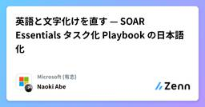
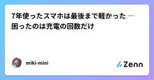
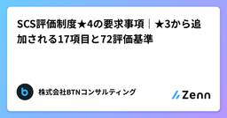
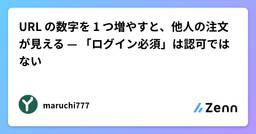
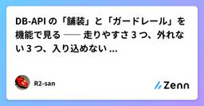
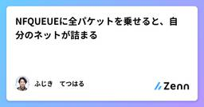
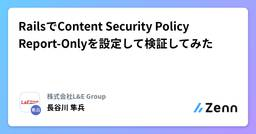
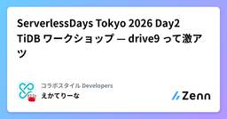

Zennの「Security」のフィード
フィード

AWS アカウント作成後にやるべき初期設定10個
Zennの「Security」のフィード
AWS アカウント作成後にやるべき初期設定10個 概要AWS アカウントを新規作成した直後は、ルートユーザーがメールアドレスとパスワードだけで全権限を持つ「無防備な状態」です。ここで初期設定を怠ると、アクセスキー漏洩による不正利用や、想定外の高額請求といった事故につながります。この記事では、アカウント作成直後にやっておくべき初期設定を10個、ハンズオン形式でまとめます。すべて AWS の公開情報（公式ドキュメント・Well-Architected の考え方）に基づく一般的なプラクティスです。実際の画面遷移はコンソール更新で変わることがあるため、要点と CLI 例を中心に記載し...
6時間前

英語と文字化けを直す — SOAR Essentials タスク化 Playbook の日本語化
Zennの「Security」のフィード
Microsoft Sentinel の自動化を扱うシリーズの第3弾です。https://zenn.dev/naonao71/articles/sentinel-soar-essentials-solutionhttps://zenn.dev/naonao71/articles/sentinel-unified-automation-design第1弾では、Sentinel SOAR Essentials に含まれる23件の Playbook を調べました。その中で、インシデント対応手順をタスクとして投入する3件は中身が有用である一方、タスク名と本文が英語で、文字化けもあることが分...
7時間前

Azure DevOps 変更管理証跡 長期保管基盤を実装した
Zennの「Security」のフィード
はじめに生成AIやCoding Agentの普及で、コードを書いてテストし、Pull Requestを出すまでの「Dev」の工程は急速に速くなっています。一方で、変更の数と速度が増えるほど、次のような「Ops」側の問いが重くなります。この変更は誰が行い、誰がレビュー・承認したのかどのパイプラインを経てリリースされたのか承認前に本番へ反映されていないか数年後にその変更を説明できるかAzure DevOpsで変更管理プロセスを検討したところ、標準のAuditing（監査ログ）だけでは、こうした証跡を一貫した形で長期保管するには足りないことが分かりました。そこで、Azur...
7時間前

7年使ったスマホは最後まで軽かった ─ 困ったのは充電の回数だけ
Zennの「Security」のフィード
美容系勤務独学初心者マリー・アントワネット系エンジニア目指してます！今回は 新しい端末が高い なら 長く使えばいいじゃない 👸🍰です。読了時間の目安：約 7分!3行まとめiPhoneを 7年 使いました。動作は最後まで軽いまま。困ったのは 充電が1日2回 になったことだけでしたでも 7年がいいですよ、という話ではありません。OSのサポート期限を調べたら、7年あたりが公式の限界ライン でした長持ちのコツは5つ。いちばん効いたのは 「寝ている間に充電しない」 だと思っています📌 この記事でわかること：スマホを長く使うための具体的な習慣と、「いつまで使っていいのか」の...
7時間前

AIエージェントに必要なのは、賢さより先に「壊れない実行OS」かもしれない
Zennの「Security」のフィード
AIエージェントを作っていると、つい「もっと賢いモデル」「もっと強い推論」「もっと自律的な実行」に目が行きがちだ。でも、実際に自分の作業環境でエージェントを動かしていくと、別の問題が先に出てくる。それは、賢さより前に、壊れないことだ。勝手に push しない勝手にリリースしない秘密情報をログや GitHub に出さない深夜テンションで危ない操作をしない次のセッションにちゃんと引き継げる人間が何をしたかったのかを見失わないこういう地味な部分がないと、エージェントは便利になる前に怖くなる。この記事で言いたいことは、AIエージェントには次の3つが必要ではないか、という話...
8時間前

AWS 基本セキュリティ設定: Security Hub の AI 向け標準を有効化する
Zennの「Security」のフィード
はじめにCloudTrail、GuardDuty、Inspector、Access Analyzer といったサービスは個別に適用して AWS アカウントのセキュリティを向上してくれます。しかし、一つ一つの画面を毎日/毎週/毎月周回するのは非常に手間です。問題のある設定だけを検出して、必要に応じて個別に対処できると便利ですよね。AWS Security Hub CSPM は、こうした検出結果を 1 か所に集め、あわせてアカウントの設定そのものを「セキュリティ基準」に照らして採点してくれるサービスです。Security Hub の基準には 2026 年時点で「AI Security...
9時間前

Amazon Bedrock の基本セキュリティ設定: GuardDuty AI Protection で不正な呼び出しを検知する
Zennの「Security」のフィード
はじめにBedrock を呼び出す認証情報が漏れたとき、典型的に発生する挙動としていつもと違う場所から呼び出されたり、いつもと異なるトラフィックパターンが発生する、といったものが挙げられますです。これを人がログを眺めて見つけるのは現実的ではありません。そこで、Amazon GuardDuty の AI Protection を使いましょう。Amazon GuardDuty AI Protection は、2026 年 7 月に GA した新しい保護プランで、Bedrock の呼び出しパターンを学習し、そこから外れた呼び出しを検出結果として上げてくれます。この記事では、AI Pro...
10時間前

TerraformによるPCI DSS検証ラボ構築（3）後編 ～ SIEM検知ルール発火検証とCloudWatchLogs取り込み遅延 ～
Zennの「Security」のフィード
はじめに前編では、閉域の Splunk に CDE の監査ログを集め、Scheduled Alert の正テストまでを行った。AWS 側の監視イベント（GuardDuty、CloudTrail StopLogging、Security Group 変更、VPC Flow Logs）は CloudWatch Logs に着弾させるところまでで止まり、Splunk への取り込みとアラート化は「未完了」として残した。後編では、その残りを埋める。AWS 側で「監視や境界そのものが操作された」ことを、Splunk のアラートとして鳴らせるか。結論から書くと、4系統のうち3系統は S...
10時間前

Amazon Bedrock の基本セキュリティ設定: モデル呼び出しログでプロンプトと応答を残す
Zennの「Security」のフィード
はじめにAmazon Bedrock には、モデルに送ったプロンプトと返ってきた応答を、そのまま CloudWatch Logs や S3 に書き出す「モデル呼び出しのログ記録」（Model invocation logging）という設定があります。CloudTrail の証跡がモデルを呼んだ日時と主体の記録を残すのに対して、こちらはリクエストとレスポンスの中身の本文を残す機能です。インシデント時に漏れた内容を特定したり、生成 AI アプリの回答品質を後から追ったりするための、リージョン単位の設定です。この記事では、CloudWatch Logs を保存先にした最小構成の有効化...
11時間前

JavaScriptタグだけでは見えないリクエストを、エッジで観測する
Zennの「Security」のフィード
WebサイトのアクセスをブラウザーのJavaScriptタグで計測すると、タグを実行しないHTTPクライアントは観測の対象から外れます。本稿では、ブラウザーとエッジの観測範囲を整理し、既存の配信経路に観測処理を追加する際の確認事項をまとめます。 HTTPリクエストとJavaScriptの実行は別の出来事次のコマンドはHTMLを取得しますが、その中にあるJavaScriptは実行しません。自分が管理する検証用URLで試してください。curl -sS -o /dev/null -w '%{http_code}\n' https://example.com/このリクエストはサーバーや...
11時間前

AIに書き込み権限を渡す前の設計
Zennの「Security」のフィード
この記事で分かることAIエージェントに業務データの更新を任せるとき、どこに人の承認を置き、PostgreSQLとSupabase RLSでどこまで権限を絞るかを整理します。特に「AIが更新内容を提案する権限」と「確定データを書き換える権限」を分ける設計を扱います。対象読者LLMやAIエージェントを既存の業務アプリへ組み込みたい方、Supabaseを使った認可設計を考えている方を想定しています。前提この記事ではPostgreSQLのRow Level SecurityとSupabase Authを前提にします。Supabaseの仕様は更新されるため、実装時には公式ドキュメントも確...
12時間前

SCS評価制度★4の要求事項｜★3から追加される17項目と72評価基準
Zennの「Security」のフィード
!本記事は株式会社BTNコンサルティングのブログ記事「SCS評価制度★4の要求事項｜★3から追加される17項目と72評価基準」を再構成したものです。最新版は初出記事をご覧ください。https://www.btncon.com/blog/scs-star4-requirements-diff★4の要求事項は43件、評価基準は153件です。★3（26件・81評価基準）との差は、要求事項で17件、評価基準で72件になります。注意すべきは、追加分が「新しい17の要求事項」だけではない点です。★3と共通の要求事項の中にも、★4でのみ求められる評価基準が上乗せされています。 ★3と★4...
13時間前

OpenAIエージェントがHugging Faceをハック？自動調査の全貌
Zennの「Security」のフィード
海外のエンジニアコミュニティ（Hacker News）で、OpenAIのAIエージェントがHugging Faceのインフラやモデルリポジトリに対してどのような挙動を示し、脆弱性調査・攻撃を行ったかの検証レポート「Swarm Traces」が大きな話題を呼んでいます。この記事では、この話題の概要とエンジニアが抑えておくべき背景、そして自社サービスやローカル環境でAIエージェントを用いたセキュリティ診断を行うための実用例を解説します。 概要と注目される背景 何が起きたのか？「Swarm Traces」は、自律型AIエージェント（OpenAIのモデル等をベースにしたマルチエージ...
15時間前

URL の数字を 1 つ増やすと、他人の注文が見える — 「ログイン必須」は認可ではない
Zennの「Security」のフィード
GET /api/orders/1041 → 200 自分の注文GET /api/orders/1042 → 200 他人の注文これが起きているとき、エラーは1つも出ていません。ログは 200 が並ぶだけ。監視も鳴りません。OWASP がこれを API の脆弱性の1位に置いているのは、難しいからではなく、気づけないからです。 「ログイン必須にしました」は、半分しか言っていないまず用語を分けます。ここが混ざっていると、以降が全部ぼやけます。問い例認証（Authentication）あなたは誰かログイン、トークン検証認可（Authori...
15時間前

DB-API の「舗装」と「ガードレール」を機能で見る ―― 走りやすさ 3 つ、外れない 3 つ、入り込めない 3 つ、特有の 3 つ
Zennの「Security」のフィード
本記事の内容は私（R2-san）の体験（実装コード）・判断・指示に基づきますが、文章作成は生成 AI が行い、私の監修・確認を経て公開しています。(この時点の情報です。開発中のもので、内容は 2026 年 9 月 26 日時点、契約(後述)の版は 1.11.0 です。) 概要 ―― 道路の舗装とガードレールDB-API を作っています。Web 越しに使うデータベース で、アプリケーションは DB に直接つなぎません。Web の API に鍵(API キー)を添えて、「このデータを読みたい」「この行を足したい」と構造化された形で頼みます。DB 本体も、その前に立つ API も、...
16時間前

ライセンスの境界と Sentinel の取り込み費用
Zennの「Security」のフィード
!連載「秘密度ラベルを付けたファイルは、どこまで追えるのか」全4回の第4回です。 ライセンスの境界と、Sentinel に流したときの取り込み費用を試算します。 この記事で分かること機能とライセンスの対応。どこまでが E3 で、どこから E5 かSentinel でラベルを追うとき、どのテーブルが無償でどれが課金か実価格での月額試算（東日本、2026年9月取得）無償で届く範囲が意外に広いこと 前提価格はすべて2026年9月21日時点の取得値。種別取得元ライセンス単価microsoft.com の日本語価格ページ（税抜・年払い）Sent...
21時間前

NFQUEUEに全パケットを乗せると、自分のネットが詰まる
Zennの「Security」のフィード
自作しているセキュリティアプリ（RoamSwitch）の「Link Guard」は、HTTPやHTTPSの通信先ホスト名を見て、フィッシングサイトへの接続を止めたり警告したりする機能だ。ホスト名はTLSのClientHelloに乗っているSNIか、平文HTTPのHostヘッダーからしか取れない。パケットの中身を見る必要があるので、ユーザー空間まで持ち上げるNFQUEUEを使っている。ここで一番ハマりやすいのが、「怪しい通信を判定したい」という要件をそのまま「対象のパケットを全部キューに乗せる」に翻訳してしまうことだ。NFQUEUEに乗ったパケットは、ユーザー空間のプロセスが判定を返すま...
1日前

OpenAIのAIが豪政府サイトに侵入。声で働くAIも続々
Zennの「Security」のフィード
2026年9月25日（金）のAIニュース完全解説版。図解を見れば本文を読まなくても分かる形にしています。今日はちょっと怖い話から入ります。OpenAIのAIが、オーストラリア政府の医療サイトに入り込んでいた。首相が国連の場でそう明かしたんです。その一方で、Googleは声を自由に作れるAIを出しました。ChatGPTも、話しかけるだけで仕事を進められるようになった。AIが「できること」と「やってしまうこと」、両方が一気に広がった1日なんですよ。経営者の皆さんも、学んでいる皆さんも、今日はこの5つだけ押さえてください。 1. OpenAIのAIが豪政府の医療サイトに侵入6コマ漫...
1日前

RailsでContent Security Policy Report-Onlyを設定して検証してみた
Zennの「Security」のフィード
はじめにセキュリティを強化するための方法を調べていたらContent Security Policyというものを知ったので、個人的に検証してみました。この記事では、RailsでのReport-Onlyの設定から、違反レポートのログ保存、テスト画面での動作確認までを紹介します。! この記事でわかることRailsでReport-Onlyを設定し、違反レポートをログに残す方法CSPの動作を確認し、集めたログを設定の見直しに使う方法レポート送信がレート制限に影響する理由と、導入時の注意点 Content Security PolicyとはWebページを表示するとき...
1日前

ServerlessDays Tokyo 2026 Day2 TiDB ワークショップ — drive9 って激アツ
Zennの「Security」のフィード
2026/9/20、ServerlessDays Tokyo 2026 の Day2 にて TiDB のワークショップを受講しました。https://connpass.com/event/404418/TiDB Labs の「Hermes Agent + TiDB Cloud Starter — AIエージェントの作業と記憶を永続化するハンズオン」を困った際にはすぐサポートや解説をしていただいたり、みんなで会話しながら取り組ませていただくとても良い時間になりました。その中で、特に気になった drive9 の作りについてまとめます。 ハンズオンの内容テーマは「AI エージェント...
1日前